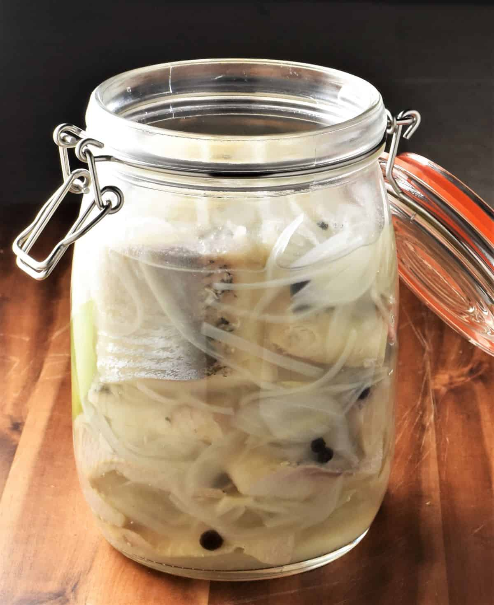

Herring with Onion in Oil

Description
If you are looking for a traditional Polish herring recipe, you are in the right place. This Polish herring in oil is not only delicious but also very simple to make. It will take just 10 minutes to have it done.
The taste is very distinct and intense, so it’s the food Poles love.
Ingredients
- 250g of herring
- 1 medium to large onion
- 235ml of vegetable oil
- 1/4 tablespoon of black pepper
- 1/2 cup of chopped parsley
Ingredients
- Place herring in a large bowl with a 1/4 liter of cold water and left soak for 2 hours.Change water out every 30 minutes.
- Take out and set on paper towels to dry a bit.
- Cut onion in half and slice thinly. Place in a bowl.
- To onion add oil, pepper, and chopped parsley
- Slice herring at an angle into about 1 inch / 3 centi-meter strips. Add to bowl with onions.
- Mix and refrigerate until serving. Best if prepared 2-3 days ahead of time.
- Serve with hearty rye bread.
- Store in fridge for up to 14 days, if needed.